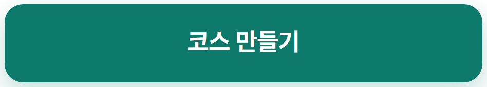
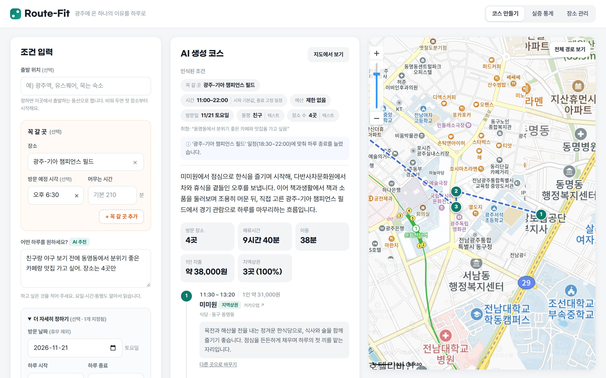
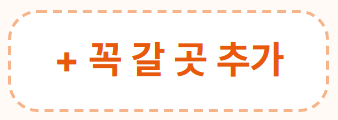

Route-Fit 사용 매뉴얼
접속 https://route-fit.duckdns.org (PC 크롬·엣지 권장)
가장 빠른 사용법 문장 한 줄 입력 →
가장 빠른 사용법 문장 한 줄 입력 →

(나머지 칸은 비워도 됩니다)AI가 광주 원도심(동명동·충장로·양림동 일대)에서 팀이 직접 조사한 동네 식당·카페·명소로 하루를 채우고, 장소 사이 이동 시간까지 맞춘 시간표를 만들어 줍니다.
1. 화면 구성

1 2 31조건 입력 2AI 생성 코스 3지도
2. 코스 만들기

① 출발 위치 선택
- 출발할 곳(역·숙소 등)을 검색해 고릅니다.
② 꼭 갈 곳 선택
- 반드시 갈 장소를 검색해 고릅니다. (예: 챔피언스 필드)
- 방문 예정 시각을 정하면 그 일정은 고정되고, 앞뒤 시간을 AI가 채웁니다.

로 최대 5곳까지 넣을 수 있습니다.
③ 어떤 하루를 원하세요? 필수
- 원하는 하루를 말하듯 적습니다.
예) “친구랑 야구 보기 전에 맛집이랑 카페 가고 싶어. 장소는 4곳만” - 동행, 요일, 시간, 장소 수, 싫은 것도 알아듣습니다.
예) “토요일 2시부터”, “훠궈는 싫어”, “대중교통 타기 싫어”
④ 더 자세히 정하기 선택
- 방문 날짜(그 요일 휴무인 곳 제외), 하루 시작·종료, 1인 예산, 빼고 싶은 장소
⑤ 누르기
- 10초 안팎이면 코스와 지도가 나옵니다.
- 마음에 안 들면 입력을 고쳐 다시 누르면 됩니다.